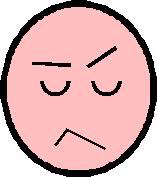
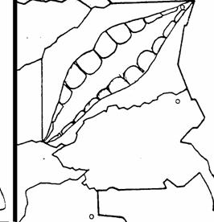

Dos amigos se encontraban muy aburridos por el abandono en que se encontraba su Región del Vichada, en orden alfabético era el último Departamento del País y parecía que ignoraban su existencia.

Vicente opinó, que tenían que encontrar un medio para llamar la atención sobre ese bello territorio, hasta pensaron en inventar un buen escándalo.
Pero Darío, al oírlo, dijo que era mejor que fuera positivo y que además, ofrecieran plata. ¡Lo mejor era lo que más gustaba, un Concurso!.
Vicente sostenía que talvez les paraban más bolas si el Concurso no fuera de Reinas, sino para Machos, como los del Vichada. ¿Que tal nombrar un Rey?
Los dos amigos celebraron la ocurrencia a puras carcajadas y después de reírse un buen rato, Darío propuso, que la mejor idea, era un Concurso de puras mentiras, aunque sonaba mejor de Risas!
Vicente era más cuidadoso, opinó que tenían que pensar en los gastos, en la organización y le gusto el nombre de Concurso de Risas, además propuso invitar a otros para oír opiniones.
Entonces convocaron a una reunión en el parque principal. Expusieron la idea con el fin de escuchar propuestas por escrito del posible proyecto y se escogió un jurado para analizar y determinar las mejores opciones.
La más ingeniosa fué la de Chamo el Dibujante, presentó un croquis original del Mapa del Vichada, era una boca sonriente con nombre VIDA!

Porque en esta deliciosa Región a todo se le inventa un buen apodo, por eso, en consenso general la propaganda rezaría así:
Celebración de las Olimpiadas de la Risa
El MAPA del Vichada les invita a participar en la Vida del Vichada.
"Concurso Nacional de Mentiras y Risas "
Participación sin importar: sexo, edad, raza o creencia.
Jurado Internacional Voluntario y en iguales condiciones.
-premio - cinco coronas enchapadas y adornadas con joyas.
Se nombrarán:
Rey, Virrey y 3 Príncipes.
Fecha 29 de febrero cada 4 años.
Enviar las propuestas por escrito.
Y en el Vichada todos celebraron la ocurrencia!